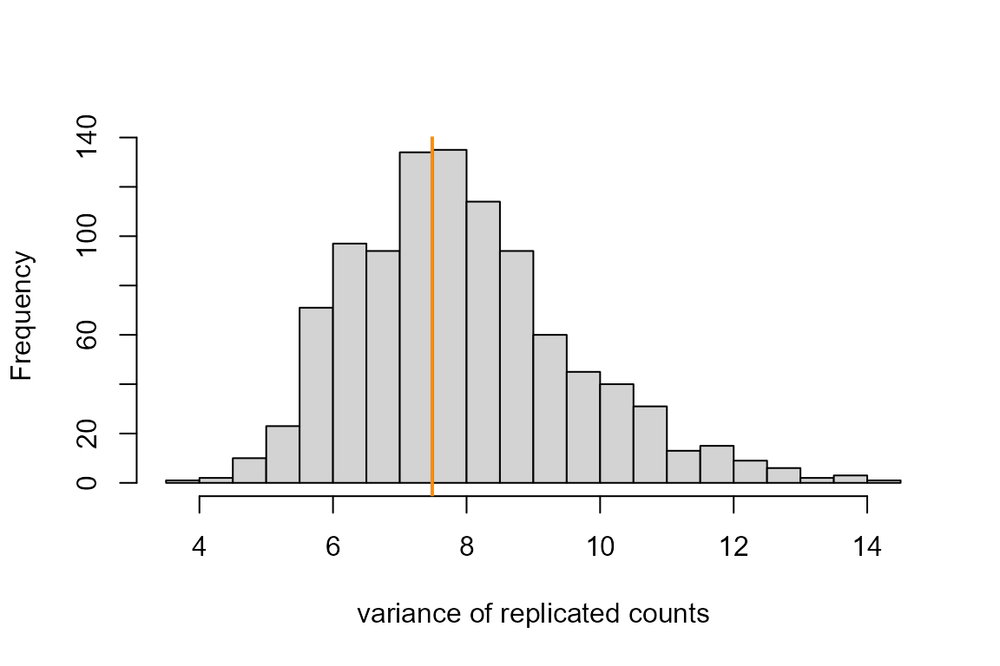
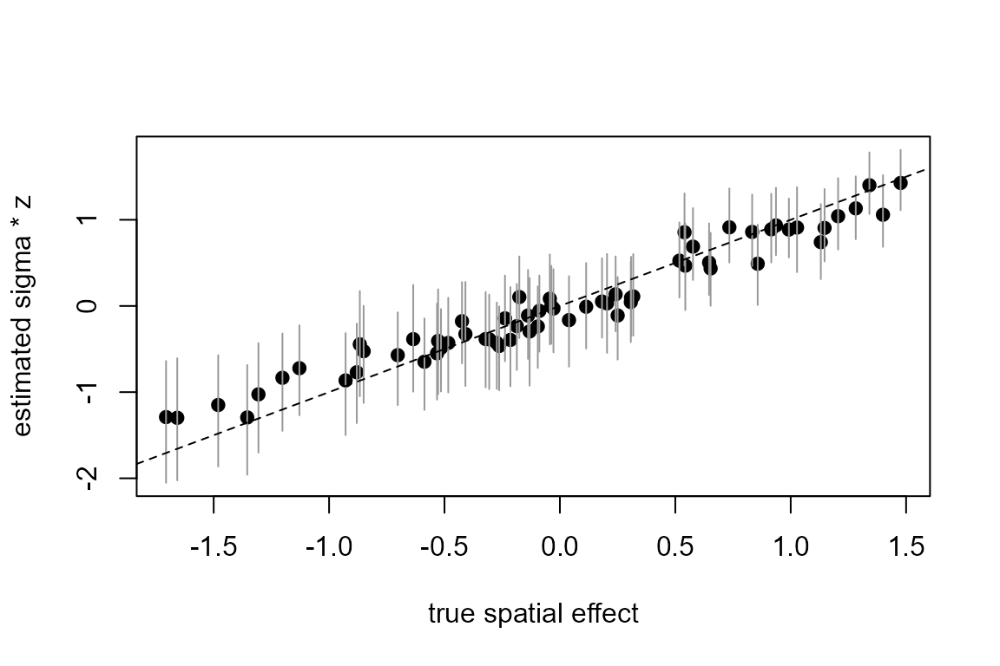
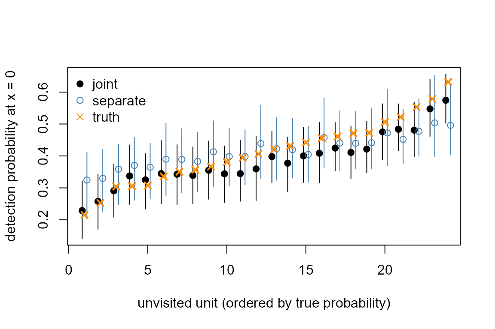

This article fits two surveys of the same region with one model: a count survey that covers every map unit and a detection survey that covers only part of the map. Both respond to one unmeasured spatial driver, and a copy scale says how strongly the detection survey feels it. The article ends with detection probabilities predicted for the units the detection survey never visited, and with a second data set in which the two surveys share nothing. The Spatial models article covers a single areal field and is the background for this one. Installation is covered in Get started.
The model
Two response arms share the map units . Index the observations of the count arm by and those of the detection arm by , and let and denote the unit an observation was taken in. The count arm is Poisson and the detection arm binomial with trials:
Each arm has its own intercept and slope ( and ) on its own covariate. The vector holds one value per unit and carries an intrinsic conditional autoregressive (ICAR) prior with unit precision,
where runs over pairs of neighbouring units. The field amplitude scales in the count arm, and the copy scale scales the same field again in the detection arm. With the two arms see the field at the same strength; with the detection arm carries no field at all and the two arms share nothing.
The copy scale has a prior with two parts. A point mass of probability sits at , the model in which the arms are unrelated, and the other half is spread over by an exponential density whose rate puts 5% of that half above the largest node of the copy-scale axis. The posterior mass left on the point is then the posterior probability that the arms share no field, and because the prior odds are one, its odds are also the Bayes factor for the uncoupled model. The amplitude carries the engine’s default penalized-complexity prior, .
tulpa_nested_laplace_joint() integrates
and
on an outer grid. At each grid cell an inner Laplace approximation
solves for the four coefficients and the
field values together, and the cells are weighted by their marginal
likelihood times the hyperprior. The copy-scale axis the engine lays
when the call names no nodes is:
round(tulpa_grid_axis("copy_alpha"), 3)
#> [1] 0.000 0.100 0.153 0.234 0.358 0.548 0.838 1.282 1.961 3.000The first node is the point mass. The other nine are the continuum, and the largest, 3, sets the rate of its exponential prior.
Simulating data
The map is an 8 by 8 lattice of units, each a neighbour of the units
directly above, below, left and right of it. The adjacency goes to the
engine in compressed sparse row form: the 0-based neighbour indices in
adj_col_idx, with adj_row_ptr marking where
each unit’s neighbours start.
nr <- 8L; nc <- 8L; S <- nr * nc
rc <- expand.grid(r = seq_len(nr), c = seq_len(nc))
nb <- lapply(seq_len(S), function(s)
which(abs(rc$r - rc$r[s]) + abs(rc$c - rc$c[s]) == 1))
nn <- lengths(nb)
icar <- list(type = "icar", n_spatial_units = S,
adj_row_ptr = c(0L, cumsum(nn)),
adj_col_idx = unlist(nb) - 1L, n_neighbors = nn)The true spatial effect w is a smooth surface with
standard deviation 0.8 on the log scale of the counts. It stands for an
unmeasured driver such as habitat quality. The detection arm sees it at
of that strength.
set.seed(1)
w <- 0.8 * as.numeric(scale(sin(rc$r / 2) + cos(rc$c / 2.5)))
alpha_true <- 0.6The count survey takes three counts in every unit, each with its own covariate value, an intercept of 0.5 and a slope of 0.4. The detection survey visits 40 of the 64 units, four times each, and records how many of ten trials detected the species, with an intercept of and a slope of 0.8. The remaining 24 units have no detection data.
s1 <- rep(seq_len(S), each = 3L); x1 <- rnorm(length(s1))
y1 <- rpois(length(s1), exp(0.5 + 0.4 * x1 + w[s1]))
visited <- sort(sample(S, 40L))
s2 <- rep(visited, each = 4L); x2 <- rnorm(length(s2))
eta2 <- -0.3 + 0.8 * x2 + alpha_true * w[s2]
y2 <- rbinom(length(s2), 10L, plogis(eta2))
c(count_obs = length(y1), detection_obs = length(y2))
#> count_obs detection_obs
#> 192 160Fitting
Each arm is a list holding its response, trial counts, design matrix,
the unit of each observation and its family. The detection arm adds
field_coef = "alpha", which names the copy scale and lays
it on the default axis shown above. store_Q = TRUE keeps
each cell’s inner precision so that posterior draws of the field can be
taken afterwards.
counts <- list(y = y1, n_trials = rep(1L, length(y1)),
X = cbind(1, x = x1), spatial_idx = s1,
family = "poisson")
detect <- list(y = y2, n_trials = rep(10L, length(y2)),
X = cbind(1, x = x2), spatial_idx = s2,
family = "binomial", field_coef = "alpha")
ctl <- list(n_threads = 2L, store_Q = TRUE, progress = FALSE)
fit <- tulpa_nested_laplace_joint(
responses = list(counts = counts, detect = detect),
prior = icar, control = ctl)
fit
#> tulpa joint nested-Laplace fit
#> hyperparameters: sigma, alpha (grid: 103 cells)
#> outer pareto-k: -0.78 (reliable)
#> fit in 1.2s (grid 0.2s)
#> n_obs: 352
#>
#> Coefficients:
#> counts.beta1 counts.x detect.beta1 detect.x
#> 0.5674 0.3954 -0.3906 0.7593
#>
#> Use summary() for intervals, variance components, hyperparameters and reliability.summary() gives the coefficients of both arms, prefixed
by the arm name, and the two hyperparameters with their posterior mean,
standard deviation, median and 95% interval.
summary(fit)
#> tulpa fit (nested_laplace_joint)
#> n_obs: 352
#>
#> Fixed effects:
#> estimate std.error 2.5 % 97.5 %
#> counts.beta1 0.5674 0.06118 0.4265 0.6663
#> counts.x 0.3954 0.05680 0.2852 0.5079
#> detect.beta1 -0.3906 0.05896 -0.5093 -0.2782
#> detect.x 0.7593 0.06098 0.6468 0.8858
#> interval read: skew_map_cell
#> interval declined: skew_correct: gamma_3 is retained at the MAP cell only, so the mixture components carry no per-cell skew to compose; the coefficients it declines keep the read they would have had
#>
#> Hyperparameters:
#> parameter mean sd median ci_lo ci_hi
#> sigma 0.6083 0.08571 0.6002 0.4513 0.8034
#> alpha 0.6534 0.09597 0.6536 0.4751 0.8601
#>
#> Reliability (iid draws):
#> outer pareto_k -0.7798 (good); grid ESS 10.21 of 103 cells; inner skew 0.04099 (good)
#> verdict: reliable (both layers good)The slopes come back near their true values of 0.4 and 0.8, with intervals that contain them. The copy scale’s interval, read from the hyperparameter table, contains the true 0.6. The amplitude is not compared with 0.8 directly: it multiplies an unscaled ICAR field, whose own standard deviation depends on the lattice, so the comparison with the truth is made on the field contribution below.
The posterior probability that the arms share no field is the mass the outer grid leaves on :
fit$copy_atom
#> $prior_mass
#> [1] 0.5
#>
#> $posterior_mass
#> [1] 1.193137e-19Checking the fit
diagnostics() grades the two approximation layers: the
outer grid that integrates
and the inner Gaussian approximation at each cell.
diagnostics(fit)
#> Nested-Laplace WHOLE-FIT reliability (i.i.d. draws)
#> two layers: the outer hyperparameter-grid integration, and the inner
#> Gaussian Laplace on the latent field
#> outer PSIS pareto_k = -0.780 (good); IS-ESS = 126.6
#> proposal: grid_mixture
#> outer grid quadrature ESS = 10.21 of 103 cells (max weight 0.169)
#> hyperparameter integration contributes 0.2-10.7% of the fixed-effect marginal variance
#> note: outer grid re-centred on alpha: the default span did not contain that axis's posterior mode, so the reported grid is not the default one
#> note: outer grid coarser than its own posterior on alpha (cell width / posterior SD = 1.26, both in that axis's own coordinate): the reported interval's endpoints are resolved to within one cell, so part of their width and their realized coverage are properties of where the grid fell rather than of the posterior -- add nodes on that axis to reduce it
#> inner Laplace max |gamma_3| = 0.041 (good), scored 4/4 latents
#> inner Laplace importance pareto_k = 0.484 (good), min IS efficiency 0.9995, scored 4/4 latents
#> the importance weights are uniform on every probed index: the inner
#> Gaussian reproduces the conditional posterior over the sampled region,
#> so the shape above describes no correction and is not banded
#> whole-fit verdict: reliable (both layers good)
#> per-parameter columns: none.
#> the fit carries no posterior draws, so the per-parameter mean / sd / per-parameter columns are empty; tulpa_posterior_draws(fit) samples the retained outer-grid mixture if a sample is wantedBoth layers grade as good. The note on says the grid cells on that axis are 1.5 posterior standard deviations wide, so the endpoints of its interval are resolved to within one cell.
A posterior predictive check compares the count arm with counts
replicated from the fit. tulpa_posterior_draws() samples
the latent vector from the fitted grid mixture: one row per draw, with
the four coefficients first and the 64 field values after them.
Attribute theta holds the matching
of each draw.
set.seed(2)
d <- tulpa_posterior_draws(fit, n = 1000)
th <- attr(d, "theta")
zc <- fit$arm_layout$phi_start + seq_len(S)
f1 <- th[, "sigma"] * d[, zc]
f2 <- th[, "alpha"] * f1f1 holds the field contribution
in the count arm and f2 the contribution
in the detection arm, one column per unit. The replicated variance of
the counts, one value per draw, is set against the observed
variance:
eta1 <- d[, 1] + outer(d[, 2], x1) + f1[, s1]
yrep <- matrix(rpois(length(eta1), exp(eta1)), nrow = nrow(eta1))
v_rep <- apply(yrep, 1, var)
hist(v_rep, breaks = 30, main = "", xlab = "variance of replicated counts")
abline(v = var(y1), lwd = 2, col = "darkorange")
The observed variance falls inside the replicated distribution, and the printed share is the posterior predictive p-value of that statistic.
Interpreting the fit
The field contribution in the count arm is set against the true
effect w, unit by unit, with 95% intervals from the
draws.
q1 <- apply(f1, 2, quantile, c(0.025, 0.5, 0.975))
plot(w, q1[2, ], pch = 19, ylim = range(q1),
xlab = "true spatial effect", ylab = "estimated sigma * z")
segments(w, q1[1, ], w, q1[3, ], col = "grey60")
abline(0, 1, lty = 2)
c(correlation = cor(q1[2, ], w), sd_estimate = sd(q1[2, ]))
#> correlation sd_estimate
#> 0.9729460 0.6857778The estimates lie along the identity line with a correlation of 0.97. Their standard deviation is 0.68 against the true 0.8: the ICAR prior pulls each unit toward its neighbours, which shrinks the extremes of the surface.
The posterior of the copy scale is read from the outer grid.
tulpa_outer_grid() returns one row per cell with its
value in nodes and its normalized weight in
weights. Summing the weights over the cells at each
level gives that axis’s marginal.
g <- tulpa_outer_grid(fit)
dim(g$nodes)
#> [1] 103 2
p_alpha <- tapply(g$weights, g$nodes[, "alpha"], sum)
round(p_alpha, 3)
#> 0 0.350129713240255 0.404160319007241 0.466528710026816
#> 0.000 0.000 0.004 0.039
#> 0.558192831358526 0.667867229354734 0.799090584808091 0.956096862763987
#> 0.279 0.497 0.173 0.008
#> 1.10363787603299
#> 0.000The grid holds more levels than the default axis, because the fit’s refinement added levels between 0.44 and 1.04, where the posterior sits. The point mass at zero carries no weight.
lev <- as.numeric(names(p_alpha))
plot(lev, p_alpha, type = "h", lwd = 4, xlim = c(0, 1.5),
xlab = "copy scale alpha", ylab = "posterior weight")
abline(v = alpha_true, lty = 2)What the shared field buys
The same detection data, fitted alone, carries its own field with its own amplitude and no information from the counts. A joint fit with one arm is that model.
detect_alone <- detect
detect_alone$field_coef <- NULL
fit_d <- tulpa_nested_laplace_joint(
responses = list(detect = detect_alone), prior = icar, control = ctl)
rbind(joint = confint(fit)["detect.x", ],
separate = confint(fit_d)["detect.x", ])
#> 2.5 % 97.5 %
#> joint 0.6467663 0.8858062
#> separate 0.6258923 0.8726283The slope intervals are nearly the same width. The difference is in the field. At the 24 units the detection survey never visited, the separate fit can only interpolate from neighbouring units, while the joint fit also reads the counts taken there.
set.seed(3)
dd <- tulpa_posterior_draws(fit_d, n = 1000)
fd <- attr(dd, "theta")[, "sigma"] * dd[, fit_d$arm_layout$phi_start + seq_len(S)]
unvisited <- setdiff(seq_len(S), visited)
err <- function(f) sqrt(mean((colMeans(f[, unvisited]) -
alpha_true * w[unvisited])^2))
wid <- function(f) mean(apply(f[, unvisited], 2, function(v)
diff(quantile(v, c(0.025, 0.975)))))
rbind(joint = c(rmse = err(f2), interval_width = wid(f2)),
separate = c(rmse = err(fd), interval_width = wid(fd)))
#> rmse interval_width
#> joint 0.1125887 0.7297106
#> separate 0.2417778 0.7822557On these 24 units the root mean squared error of the detection-arm field is 0.11 for the joint fit and 0.25 for the separate fit, with intervals of similar width.
Prediction
The detection probability at an unvisited unit, for a covariate value of zero, is . Each posterior draw gives one value, so the draws carry the uncertainty of the intercept, the copy scale and the field together.
p_joint <- plogis(d[, 3] + f2[, unvisited])
p_sep <- plogis(dd[, 1] + fd[, unvisited])
p_true <- plogis(-0.3 + alpha_true * w[unvisited])
qj <- apply(p_joint, 2, quantile, c(0.025, 0.5, 0.975))
qs <- apply(p_sep, 2, quantile, c(0.025, 0.5, 0.975))
o <- order(p_true); k <- seq_along(o)
plot(k - 0.15, qj[2, o], pch = 19, ylim = range(qj, qs),
xlab = "unvisited unit (ordered by true probability)",
ylab = "detection probability at x = 0")
segments(k - 0.15, qj[1, o], k - 0.15, qj[3, o])
points(k + 0.15, qs[2, o], pch = 1, col = "steelblue")
segments(k + 0.15, qs[1, o], k + 0.15, qs[3, o], col = "steelblue")
points(k, p_true[o], pch = 4, col = "darkorange", lwd = 2)
legend("topleft", c("joint", "separate", "truth"), pch = c(19, 1, 4),
col = c("black", "steelblue", "darkorange"), bty = "n")
The joint predictions rise with the true probability across the unvisited units. The separate predictions move less, because only the neighbouring visited units inform them.
Model comparison
logLik() on a joint fit returns the log evidence: the
marginal likelihood integrated over the outer grid with the hyperpriors.
Two restricted models are compared with the copy model. With
field_coef = 0 the detection arm carries no field; with
field_coef = 1 it carries the field at the count arm’s
strength. Both fit only
on the outer grid.
detect_0 <- detect; detect_0$field_coef <- 0
detect_1 <- detect; detect_1$field_coef <- 1
fit_0 <- tulpa_nested_laplace_joint(list(counts = counts, detect = detect_0),
prior = icar, control = ctl)
fit_1 <- tulpa_nested_laplace_joint(list(counts = counts, detect = detect_1),
prior = icar, control = ctl)
compare_models(copy = fit, no_field = fit_0, alpha_one = fit_1,
criterion = "loglik")
#> model n_params logLik quantity conditioned_on
#> 1 copy 4 -643.9354 log_evidence
#> 2 no_field 4 -681.1538 log_evidence
#> 3 alpha_one 4 -645.2078 log_evidenceThe model with no field in the detection arm sits 37.5 log units
below the copy model. The model with
fixed at 1 sits 1.6 below it, so the data prefer a detection arm that
feels the field more weakly than the count arm. The separate fit
fit_d does not enter this table, because it models only the
detection data and its evidence is on a different set of
observations.
When the arms share nothing
The second data set keeps the counts and replaces the detections by data simulated with : the detection arm has its covariate effect and no spatial field.
set.seed(4)
detect_z <- detect
detect_z$y <- rbinom(length(s2), 10L, plogis(-0.3 + 0.8 * x2))
fit_z <- tulpa_nested_laplace_joint(list(counts = counts, detect = detect_z),
prior = icar, control = ctl)
fit_z$copy_atom
#> $prior_mass
#> [1] 0.5
#>
#> $posterior_mass
#> [1] 0.8233213The point mass now holds 0.82 of the posterior weight on . The continuum part of the axis carries the rest, and its own weight piles up at its smallest node, 0.1, as the per-level weights show.
gz <- tulpa_outer_grid(fit_z)
round(tapply(gz$weights, gz$nodes[, "alpha"], sum), 3)
#> 0 0.1 0.1529819374737 0.234034731932072
#> 0.823 0.135 0.034 0.007
#> 0.358030867271064 0.547722557505166 0.837916580451906 1.2818610191887
#> 0.000 0.000 0.000 0.000
#> 1.961015822875 3
#> 0.000 0.000Because the prior odds are one, the posterior odds on the point mass are the Bayes factor for the model with no shared field:
pm <- fit_z$copy_atom$posterior_mass
c(posterior_mass = pm, bayes_factor_uncoupled = pm / (1 - pm))
#> posterior_mass bayes_factor_uncoupled
#> 0.8233213 4.6599929The data favour the uncoupled model by a factor of about 4.7.
A weak second arm
How much the detection arm can say about depends on how much information it carries. Refitting the first data set with each detection reduced to a single binary trial, still at the true :
set.seed(5)
detect_w <- detect
detect_w$n_trials <- rep(1L, length(s2))
detect_w$y <- rbinom(length(s2), 1L, plogis(eta2))
fit_w <- tulpa_nested_laplace_joint(list(counts = counts, detect = detect_w),
prior = icar, control = ctl)
fit_w$copy_atom
#> $prior_mass
#> [1] 0.5
#>
#> $posterior_mass
#> [1] 0.006289655
fit_w$theta_ci_lo["alpha"]; fit_w$theta_ci_hi["alpha"]
#> alpha
#> 0.3020082
#> alpha
#> 1.490457With 160 binary detections the 95% interval for runs from 0.32 to 1.49, against 0.50 to 0.90 with ten trials per detection, and the point mass still holds almost no weight. The weaker arm leaves the coupling detected but its strength poorly resolved.
Practical guidance
-
Read
copy_atomwith its prior. The point at starts with probability 1/2, so the posterior mass on it reads directly as a posterior probability, and its odds as a Bayes factor. Here it was 0 at and 0.82 at . -
The arm with less information decides how well
is resolved. With 160 detections of ten trials each the 95%
interval for
was 0.41 wide; with 160 single trials it was 1.17 wide. A large
posterior_massis evidence for “no shared field” only if the weaker arm could have shown one; simulating from the fitted model at a plausible checks that. -
Beside a heavy point mass, the continuum’s weight sits at
its low end. When most of the weight sits at
,
the remainder piles up at the smallest continuum node.
copy_atomand the per-level weights fromtulpa_outer_grid()show how the mass is split. - The gain from sharing is largest where one arm has no data. On the 24 units without detections the field error fell from 0.25 to 0.11; the slope interval of the detection arm barely changed. A joint model pays off for mapping and prediction across the gaps of the sparser survey.
-
is non-negative. The copy scale scales the donor field and
cannot flip its sign, so a driver that raises one response and lowers
the other is not represented. Fixed multipliers are set with a numeric
field_coef, as in the comparison above. -
One arm carries the copy scale on a single shared
field. For several shared fields, each copied onto its own arm
with its own
,
pass a list of prior blocks and the
copyargument (?tulpa_nested_laplace_joint). -
Compare
on the field scale. The amplitude multiplies an unscaled ICAR
field; the field contribution
,
drawn with
tulpa_posterior_draws(), is the quantity to compare across lattices or with a simulated truth. - Use a joint model only when the arms are measured on the same units. The field is indexed by unit; two surveys of different regions, or of the same region at unrelated resolutions, have no shared index to align.
See also
- Spatial models: the single-arm areal field this article builds on.
- Latent factors: many response arms sharing a site-level factor with one loading per arm.
- Model comparison: log evidence and its use across fits.
-
?tulpa_nested_laplace_joint: the arm and prior specifications, the multi-blockcopyargument, and the outer-grid controls.